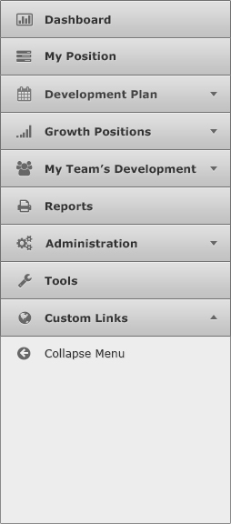
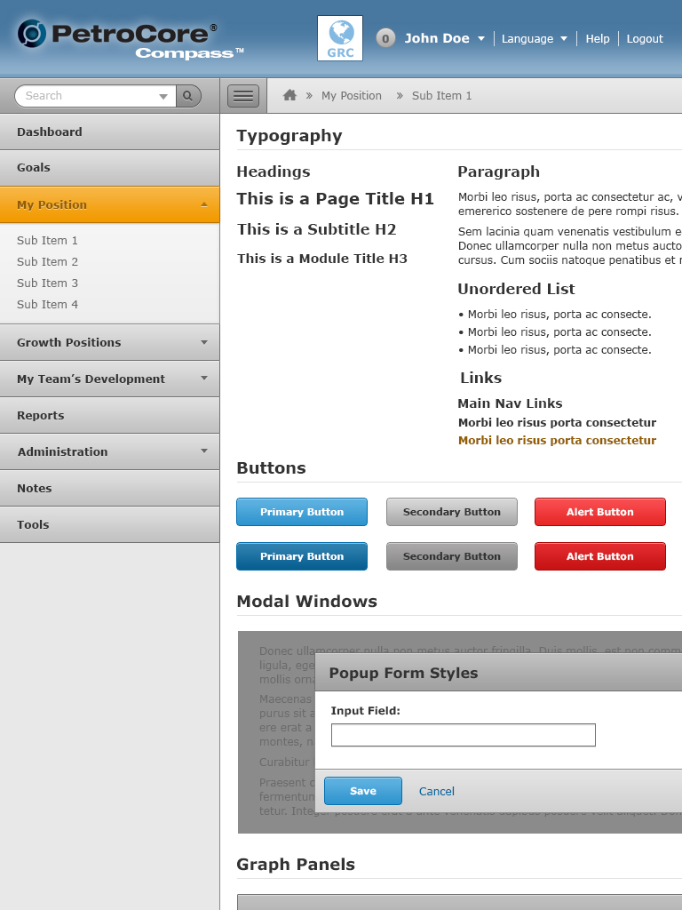
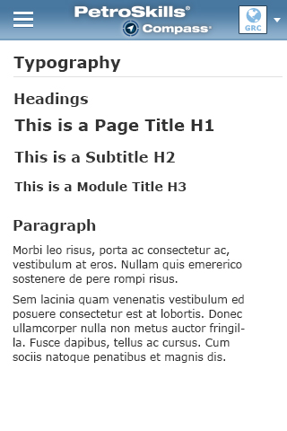

Navigation
There are navigation options for a number of situations, and everything is designed to work cross-device.
Main Navigation

The navigation used in this example is called an accordion menu. When there is a sub-level navigation, the accordion will expand to reveal more navigation links that corresponds with that particular section.
Breadcrumbs
Breadcrumbs are used when walking a user through a linear flow or show where someone is in the hierarchy. They are built with a UL just like pagination, and they can support span or anchor elements with current and unavailable classes.
When breadcrumbs have links that display too many characters or are too long for the entire breadcrumbs to fit, they will display a "..." after 20 characters (including spaces). This is to indicate to the user that the link contains more characters.
Search
A search form that is placed above the main navigation and is used to search the entire site globally.
Pagination
Pagination control allows users to go through multiple pages of results. The pagination control must display as above:
- It must have a page number indication as follows: [current page number] of [total pages]
- 5 pages are listed on the 2nd line. Example: 1 2 3 4 5
- There are 4 arrow controls. In the screenshot above, first one takes you back to page 1. Second arrow takes you back a page. Third arrow takes you forward a page. Fourth arrows takes you to the last page.
Responsive
When viewing the web application on a mobile device such a a tablet or smartphone, the main navigation is hidden until the user invokes it by tapping on the "Menu" button besides the Breadcrumb area. The menu acts as a hide/show functionality.
Tablet


Smartphone
Like its tablet counterpart, the navigation is hidden away in a "Menu" button that is placed on the top left. The user can view the navigation by tapping the menu button.
